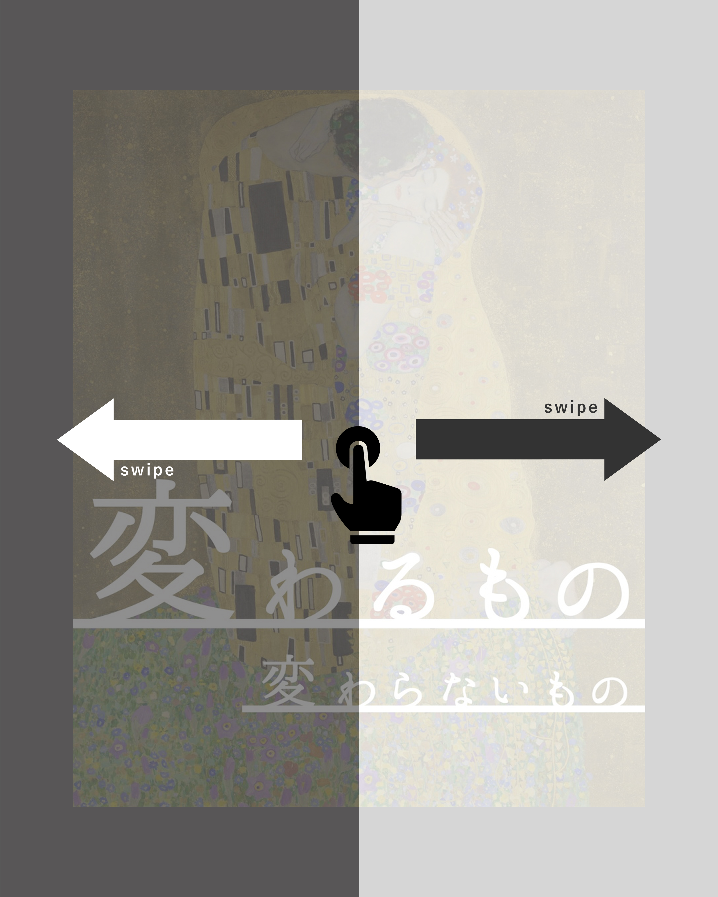

- ユディトI - 1901
- アデーレ・ブロッホ＝バウアーの肖像I - 1907
- 接吻 - 1907~08
- 抱擁 - 1904~09
- 希望II - 1907~08
- 女の三世代 - 1905
- ダナエ - 1907~08
- 水蛇II - 1904
- 死と生 - 1910~15
- 処女 - 1913
- 赤子(ゆりかご) - 1917~18
- ミュージックI - 1895
- 白い服の女 - 1917~18
- フリッツァ・リードラーの肖像 - 1906
- メーダ・プリマヴェージの肖像 - 1912
- ヘレーネ・クリムトの肖像 - 1898
Please Scroll ▼